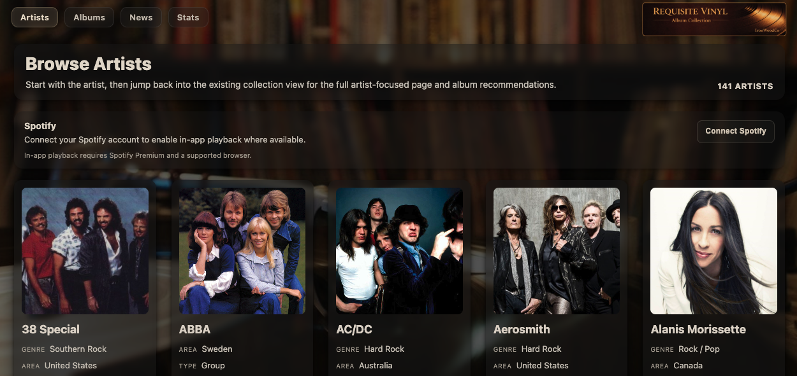
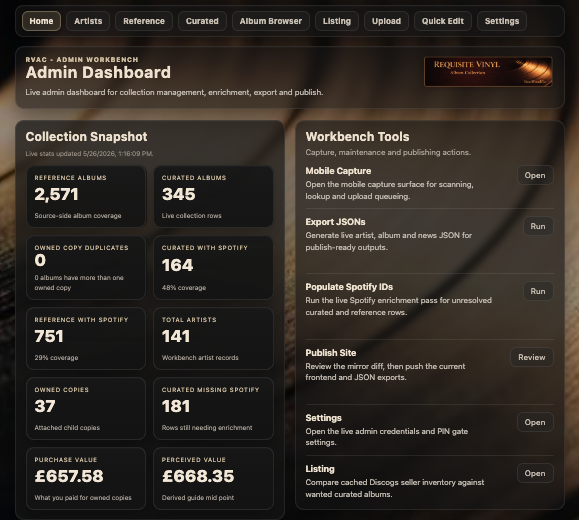

Data modelling
Structured collection data for albums, artists, held copies, and browsing.
An independent collection-management project demonstrating data modelling, metadata enrichment, admin tooling, and static publishing workflows.
Requisite Vinyl sits separately from the Pulse runtime as a development project around collection data, browsing, and publication.

Structured collection data for albums, artists, held copies, and browsing.
Use external music metadata sources to improve the collection view.
Publish a readable collection site from prepared data and assets.
The public interface focuses on artist-led browsing and collection discovery.

The private workbench supports collection management, enrichment, export, publication review, and operational tools for maintaining the collection.